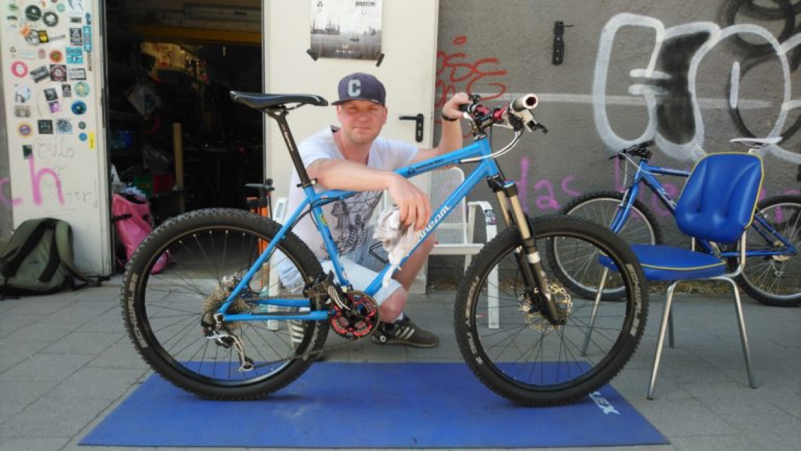
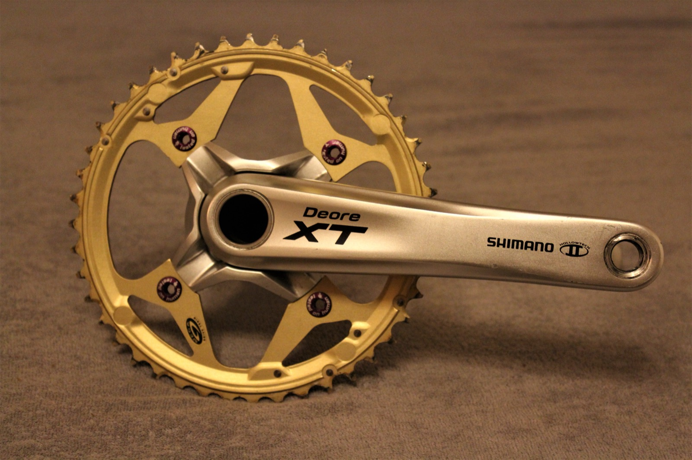

Radium
Bike &
Parts
Gebrauchte Sporträder & Premium-Parts — MTB, Cross, Trekking, Race, Vintage & Classic. Fachmännisch überholt, geprüft und bereit für den Trail.

Moin.
Ich biete euch gebrauchte Sporträder und Ersatzteile: MTB, Cross, Trekking, Race, Vintagebikes, Classicbikes, Funbikes und hochwertige Komponenten für eure Räder.
Ich kaufe und verkaufe Sporträder und Zubehör — Laufräder, Schaltungskomponenten, Bremsen sowie Kurbeln, Pedale, Lenker, Sattelstützen, Bereifung usw.
Alle Bikes sind gewartet und fachmännisch überholt. Meine Parts sind meist neuwertig oder in einem guten gebrauchten Zustand — gereinigt und auf ihre Funktionsfähigkeit überprüft.
Meine besondere Leidenschaft gilt Mountainbikes aus den 90er Jahren.
Bikes
Eine Auswahl an Bikes, die ich in den letzten Jahren aufgebaut habe. Alle Bikes in der Galerie →

Parts
Hochwertige Premium-Parts in gutem gebrauchten Zustand — gereinigt und auf Funktion geprüft.
Der Bestand wechselt ständig. Frag einfach nach dem Teil, das du suchst.
Teil anfragen →Bike kaufen?
Alle Bikes, die gerade zu haben sind, findest du in meinem Shop auf Kleinanzeigen — laufend neue Räder.
Contact
Nachricht schreiben oder anrufen — Termin nach Absprache.